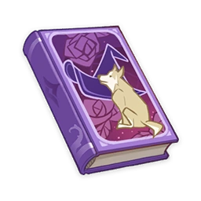

Mondstadt · Books & Literature
Hex & Hound
This eleven-volume Mondstadt serial follows Dietrich, a Lawrence noble transformed into a dog by the witch Nottfriga. Its story crosses the aristocracy's fall and continues through the bond between Nottfriga and her sister Magdalene, ending on an unresolved cliffhanger.

Book record and serialization
Hex & Hound is an eleven-volume Mondstadt book collection. Its opening volume calls itself a nostalgic summer story set in the age of aristocrats, while the item record places Volumes I through IX in Mondstadt's library and Volumes X and XI with Kuroda at Yae Publishing House in Inazuma. No author is named.
Volume VI inserts a message from an editor thanking readers and joking that the author was retrieved from the Cat's Tail in a drunken state so serialization can continue. It is a wink within the book's framing, not an author credit or proof that the events are a historical record.
Dietrich and the witch's trap
Dietrich is introduced as a highborn young man of the Lawrence Clan: talented with a sword, short-tempered, and convinced that a commoner girl should be his for the taking. He sees a blonde, blue-eyed girl in the city and decides to abduct her. The first volumes shift attention to a traveling scholar named Nottie, whose arrival in Mondstadt occurs against a background of everyday oppression under the nobility.
Dietrich later tries to enter Nottie's room. At night she reveals a serpent armband, gives him a drink, and uses the black gem set in his sword to bring the snake to life. In the confusion he hides beneath the bed and is transformed into a dog. Nottie then identifies herself as Nottfriga, the Enchantress of the Night, places a controlling collar around him, and sets out to train him.
A fallen house and an interrupted escape
The early volumes turn Dietrich's punishment into a serialized comic adventure. He is forced to follow Nottfriga and endure her spells. Volume VI abruptly places him amid the fall of the Lawrence house: his parents are nearby but cannot hear him, and he is dragged toward a witch's pot intended to complete a stew of life eternal. The volume ends with him falling away from the scene; the next opens with him waking in a forest, without fully narrating how he arrived there.
The fall of the Lawrence house is part of the novel's stated aristocratic setting, but Dietrich remains a character in this story. His name and clan connect the serial to Mondstadt's familiar history; they do not establish that this particular noble existed or that every scene recounts the real rebellion.
Magdalene, Nottfriga, and the fear lesson
In Volume VII, Dietrich wakes to the blonde girl and learns that she calls herself Magdalene, Nottfriga's younger sister. Magdalene can understand him despite his barking, and insists that her sister is gentle. Volume VIII reveals a more unsettling version of Nottfriga's training: she has placed an Essence of the Inmost Heart in Dietrich, inducing a false nightmare that exposes his fears. The sisters' affection and Nottfriga's cruelty remain tangled together rather than being resolved into a simple rescue story.
Volume IX continues through Magdalene's perspective in a forest and ends with her saying that she is already dead. Volume X supplies the backstory: their mother used her own life force to preserve her twin daughters, but died; Nottfriga blamed herself for Magdalene's death and used dark magic and alchemy to make a vessel for her sister's soul. She turned that vessel into the serpent bracelet she wears and set out with Magdalene restored through it.
Volume XI ends in danger
In the final available volume, Magdalene says it is time to switch with her elder sister and gives Dietrich a present. Nottfriga takes over, puts Dietrich's own sword in his mouth, and tells him to bite down and defend himself. A commotion approaches in the distance, and the volume stops before the threat or its outcome is identified.
The series therefore has eleven collected volumes, but the story presented in them does not reach a clear conclusion. The unresolved ending is a feature of the available text, not evidence that Dietrich or the sisters have a confirmed fate elsewhere in Teyvat.
The Lawrence setting and its limits
Hex & Hound explicitly names the Lawrence Clan and depicts a society where nobles oppress commoners. That backdrop matches the book's own phrase, 'the age of aristocrats,' and gives Dietrich's privilege a clear social context. The series also uses overt magical transformations, a speaking dog, witches, and a serialized editor's joke, all of which belong to its storybook presentation.
Read the Lawrence references as meaningful literary use of Mondstadt's past, while keeping the boundary between setting and evidence. The collection does not independently verify a real Dietrich, Nottfriga, Magdalene, or the exact events in the eleven installments. It also does not identify Nottfriga with a named witch or organization from another source.
This is an original CoreGG reading guide, not an official HoYoverse article or a reproduction of the game text. Source links below identify the records used so you can check the original context.
Sources & references
Check these sources for the original game text and reference trail.